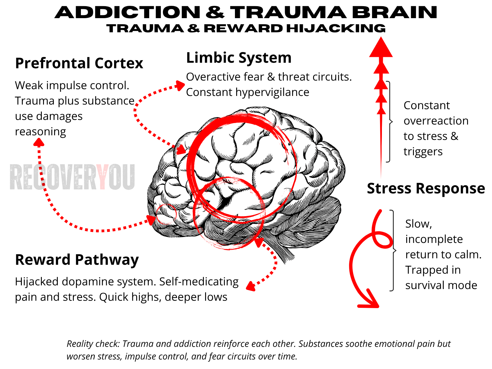

// Trauma & Addiction Model

Childhood Trauma
(PTSD & CPTSD) Brain.
An alarm system stuck “on”, safety never fully registers.
- Amygdala scans constantly, even in safe moments
- Stress response floods the body with cortisol
- Prefrontal development disrupted, regulation is harder
- Dopamine reward blunted, joy and motivation feel distant
- Trust and safety struggle to take root

When Trauma and Addiction Collide.
Two forces compounding each other — the alarm never powers down, and the only available relief is the substance.
- Amygdala never powers down
- Stress response runs hot, fueling dysregulation
- Reward pathways lock onto compulsive relief, not true pleasure
- Prefrontal cortex struggles to regulate impulses
- Homeostasis breaks, sobriety alone cannot restore balance
Without addressing trauma, expecting the brain to reset through sobriety alone is unrealistic. Childhood wounds don’t simply “course correct” in standard treatment — they require direct healing for true balance to return.